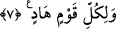

–“İkinizden Bana daha sevgili olan, benim hakkımda daha fazla hüsn-i zan
besleyendir.”
İnsan sağlam olduğu müddetçe havfın, hastalandığı zaman ise recânın efdal olduğu
söylenir. Yâni tâatlere çalışıp gayret etmesi ve günahlardan uzaklaşması için insan
sağlıklı olduğu zaman onun için havf daha fazîletlidir. Hastalanıp da amel etmekten âciz
kalınca ise onun için recâ daha fazîletlidir.
Allah Teâlâ Dâvud (a.s.)’a vahyederek şöyle buyurdu:
–“Günahkârları müjdele, sıddîkları ise korkut.”
Bunun üzerine Dâvud (a.s.):
–“Ya Rab, nasıl günahkârları müjdeler, sıddîkları korkuturum?!” dedi.
Allah Teâlâ şöyle buyurdu:
–“Günahkârlara müjdele ki bana karşı işlenen her günahı bağışlarım. Sıddîkları da
korkut ve uyar ki amellerini beğenmesinler. Çünkü kime adâletimle muâmele eder ve
hesâba çekersem mutlaka helâk olur.”
Eğer mahşerde kahr ile hitâb ederse
Peygamberler bile özür beyan edemezler
Lütuf yüzünden perdeyi kaldırırsa
Bedbahtlara mağfiret ümidi olur
Bilesin ki Allah Teâlâ insanda cemâl ve celâli birleştirmiştir. İnsanın recâsı cemâle,
havfı ise celâle dâirdir. Cisim ve ruh da bu iki sıfata işârettir. Ancak Allah’ın rahmeti -
yâni ruh ve onun hâli- gazabını - yani cesed ve ona tâbi olan şeyleri- geçmiştir. Hüküm
de sonra gelene değil, önde gidene göredir.
Şu hâlde sana düşen, ecel gelene dek amel işleyerek ümitvar olmaktır.
7. Kâfirler diyorlar ki: “Ona Rabbinden bir mûcize indirilseydi ya!” (Halbuki)
sen ancak bir uyarıcısın ve her toplumun bir rehberi vardır.
“Kâfirler diyorlar ki: “Ona” Muhammed’e “Rabbinden” idrâk edenin daha ilk
bakışta büyük olduğunu anlayabileceği apaçık, Muhammed’in gerçekten peygamber
olduğuna delâlet edecek zâhir “bir mûcize” bir alâmet “indirilseydi ya!”
Böyle bir mûcizeyi Rasûlullah (s.a.)’e inen âyetlere önem vermedikleri ve basît
gördükleri için istiyorlardı. Onlar hak yolu bulmak için değil, sırf inâd ettiklerinden